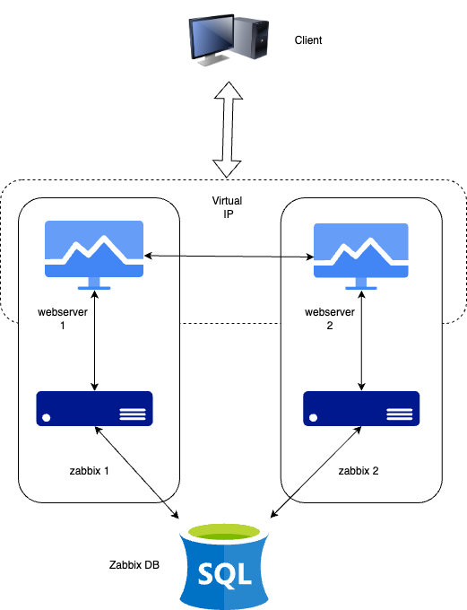
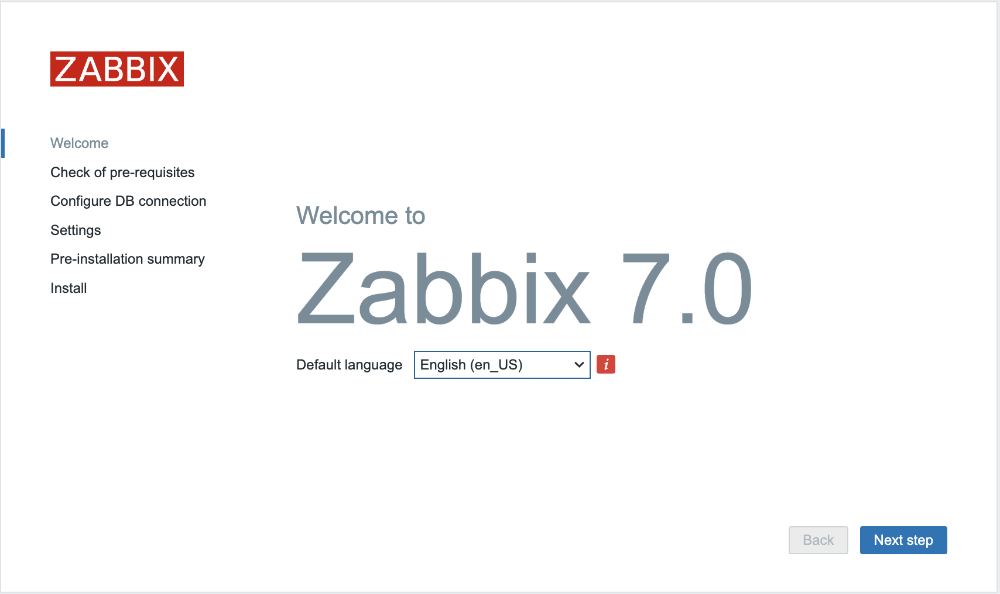
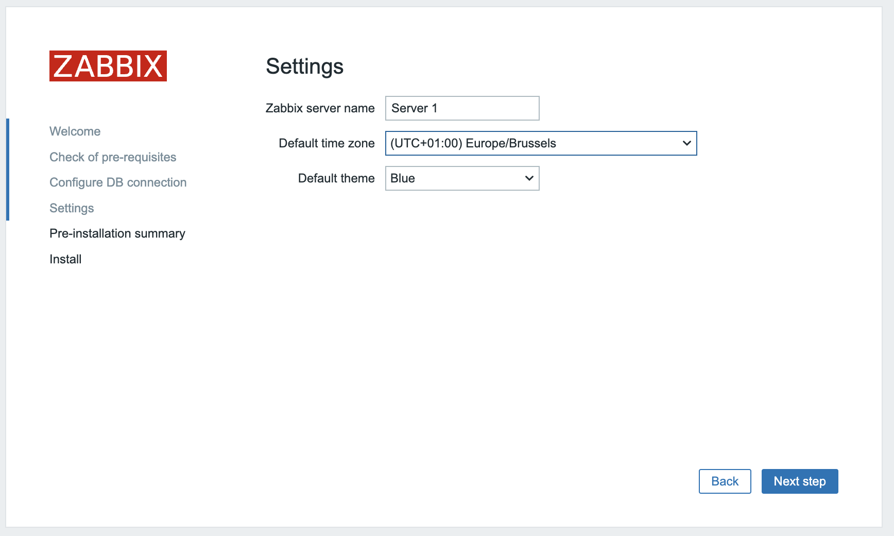

Configure Zabbix HA¶
In this section, we will set up Zabbix in a High Availability (HA) configuration. This feature, introduced in Zabbix 6, is a crucial enhancement that ensures continued monitoring even if a Zabbix server fails. With HA, when one Zabbix server goes down, another can take over seamlessly.
For this guide, we will use two Zabbix servers, but the setup allows for adding more if necessary.
It's important to note that Zabbix's HA setup is straightforward, providing redundancy without complex features like load balancing.
Just as in our basic configuration, we will document key details for the servers in this HA setup. Below is the list of servers and their respective IP addresses:

| Server | IP Address |
|---|---|
| Zabbix Server 1 | 192.168.0.130 |
| Zabbix Server 2 | 192.168.0.131 |
| PostgreSQL DB | 192.168.0.132 |
| Virtual IP | 192.168.0.135 |
Note
Our database (DB) in this setup is not configured for HA. Since it's not a Zabbix component, you will need to implement your own solution for database HA, such as a HA SAN or a database cluster setup. A DB cluster configuration is out of the scope of this guide and unrelated to Zabbix, so it will not be covered here.
Installing PostgreSQL Database¶
To set up the Zabbix HA environment, we'll begin by installing the PostgreSQL database. Follow these steps to install PostgreSQL on a Red Hat-based system.
Note
If you're using a non-x86 architecture or another OS, refer to the PostgreSQL official download page for the correct installation commands.
Warning
In this exercise, we will simplify the PostgreSQL and OS installation. For detailed configurations and optimizations, review the previous sections of this guide.
- Install the PostgreSQL repository:
bash
sudo dnf install -y https://download.postgresql.org/pub/repos/yum/reporpms/EL-9-x86_64/pgdg-redhat-repo-latest.noarch.rpm
- Disable the built-in PostgreSQL module:
bash
sudo dnf -qy module disable postgresql
- Install PostgreSQL 16:
bash
sudo dnf install -y postgresql16-server
- Initialize the database and enable automatic startup:
bash
sudo /usr/pgsql-16/bin/postgresql-16-setup initdb
sudo systemctl enable postgresql-16 --now
At this stage, PostgreSQL should be installed and running, ready for configuration with Zabbix in an HA setup.
Securing the PostgreSQL Database¶
PostgreSQL manages access permissions differently compared to MySQL or MariaDB.
Specifically, PostgreSQL uses the pg_hba.conf file, which controls who can access
the database, from where, and what encryption is used for passwords.
To allow the Zabbix frontend and Zabbix server to connect to the PostgreSQL database,
we need to configure this file accordingly.
First, edit the pg_hba.conf file to specify the access permissions:
# vi /var/lib/pgsql/16/data/pg_hba.conf
Update the file to include the following lines:
# "local" is for Unix domain socket connections only
local all all trust
# IPv4 local connections:
host zabbix zabbix 192.168.0.130/32 scram-sha-256
host zabbix zabbix 192.168.0.131/32 scram-sha-256
host all all 127.0.0.1/32 scram-sha-256
This configuration permits the Zabbix servers (at IPs 192.168.0.130 and
192.168.0.131) to connect using SCRAM-SHA-256 encryption.
Once you’ve updated pg_hba.conf, don't forget to restart PostgreSQL for the
changes to take effect. But before doing so, you also need to modify postgresql.conf
to allow incoming connections from the Zabbix servers.
By default, PostgreSQL listens only on the Unix socket, restricting external connections.
To change this, edit the postgresql.conf file:
# vi /var/lib/pgsql/16/data/postgresql.conf
Find and modify the listen_addresses line to:
listen_addresses = '*'
This will allow PostgreSQL to listen on all network interfaces, enabling external connections from the Zabbix servers.
After making the changes to both configuration files, restart the PostgreSQL service:
# systemctl restart postgresql-16
If PostgreSQL fails to restart, check the pg_hba.conf file for any syntax errors
or typos.
Add the Zabbix repository and populate the DB¶
To set up the Zabbix database, you need to add the appropriate Zabbix repository and install the necessary database scripts. Begin by adding the Zabbix repository. Ensure that you select the correct repository for your operating system and Zabbix version by visiting Zabbix download page.
For example, on a RHEL-based system:
# rpm -Uvh https://repo.zabbix.com/zabbix/7.0/rhel/9/x86_64/zabbix-release-latest.el9.noarch.rpm
Install the database scripts¶
Once the repository is added, install the database scripts:
# dnf install zabbix-sql-scripts -y
Next, unzip the database schema files required to create the necessary tables:
# gzip -d /usr/share/zabbix-sql-scripts/postgresql/server.sql.gz
At this point, the PostgreSQL database is secured, and the Zabbix database schema is ready to be populated.
Creating the Database Users¶
With PostgreSQL configured and ready, the next step is to create the Zabbix users. These users will be used by both the Zabbix server and frontend to interact with the database. If you prefer to separate the users for the frontend and the server, refer to the basic installation guide for additional details.
To create a new user for the Zabbix server:
- Switch to the
postgresuser:
# su - postgres
- Use the
createusercommand to create the Zabbix user and assign a password:
# createuser --pwprompt zabbix
You will be prompted to enter a password for the new role:
Enter password for new role: <server-password>
Enter it again: <server-password>
Replace `<server-password>` with a strong, secure password that you will use
for the Zabbix server's database connection.
Once the user is created, this account will be ready to use by both the
Zabbix server and frontend (unless you choose to create separate users for each).
Populating the Database¶
With the Zabbix user created, we can now set up the Zabbix database. Follow these steps to create and populate the database with the necessary schemas and data.
- Create the Zabbix Database
Switch to the postgres user and create the Zabbix database:
# su - postgres
# createdb -E Unicode -O zabbix zabbix
This command creates a new database named zabbix, using Unicode encoding
and assigning ownership to the zabbix user.
- Populate the Database
Next, connect to the database as the zabbix user and run the SQL script to
set up the required schemas, tables, and data. Use the psql
command-line tool:
# psql -U zabbix -W zabbix
Password:
psql (16.2)
Type "help" for help.
zabbix=> SELECT session_user, current_user;
session_user | current_user
--------------+--------------
zabbix | zabbix
(1 row)
Once connected, execute the SQL script:
zabbix=> \i /usr/share/zabbix-sql-scripts/postgresql/server.sql
You should see output indicating that tables are being created and data is being inserted:
CREATE TABLE
CREATE INDEX
CREATE TABLE
...
INSERT 0 1
DELETE 80424
COMMIT
- Verify Table Ownership
Ensure that the zabbix user owns the tables by listing them:
zabbix=> \dt
List of relations
Schema | Name | Type | Owner
--------+----------------------------+-------+--------
public | acknowledges | table | zabbix
public | actions | table | zabbix
...
If the tables are correctly owned by the zabbix user, you can exit
the psql prompt:
zabbix=> \q
The database is now populated and ready for use by the Zabbix server.
Configuring the Firewall¶
To complete the setup, you need to configure the firewall to allow incoming connections to the PostgreSQL database from the Zabbix server. By default, the firewall does not permit these connections, so we'll need to open the appropriate ports and define rules.
- Create a New Firewall Zone
Create a new firewall zone specifically for PostgreSQL access:
# firewall-cmd --new-zone=postgresql-access --permanent
success
- Reload the Firewall Configuration
Apply the changes by reloading the firewall configuration:
# firewall-cmd --reload
success
- Verify Available Zones
Confirm that the new zone has been added:
# firewall-cmd --get-zones
block dmz drop external home internal nm-shared postgresql-access public
trusted work
-
Add the Zabbix Server IPs to the New Zone
Allow the Zabbix server IP addresses to access the PostgreSQL database. Replace
<zabbix-serverip 1>and<zabbix-serverip 2>with the actual IP addresses of your Zabbix servers:
# firewall-cmd --zone=postgresql-access --add-source=<zabbix-serverip 1> --permanent
success
# firewall-cmd --zone=postgresql-access --add-source=<zabbix-serverip 2> --permanent
success
- Allow PostgreSQL Port
Open port 5432 for TCP connections in the new zone:
# firewall-cmd --zone=postgresql-access --add-port=5432/tcp --permanent
success
- Reload the Firewall Configuration Again
Reload the firewall to apply the new rules:
# firewall-cmd --reload
- Verify the Firewall Rules
Check that the firewall rules are correctly set up:
# firewall-cmd --zone=postgresql-access --list-all
Your PostgreSQL server is now configured to accept connections from your Zabbix server. You can proceed with the next task in your Zabbix HA setup.
Installing the Zabbix Cluster¶
Setting up a Zabbix cluster involves configuring multiple Zabbix servers to work together, providing high availability. While the process is similar to setting up a single Zabbix server, there are additional configuration steps required to enable HA (High Availability).
Adding Zabbix Repositories¶
First, add the Zabbix 7.0 repositories to both of your Zabbix servers:
# rpm -Uvh https://repo.zabbix.com/zabbix/7.0/rhel/9/x86_64/zabbix-release-6.5-2.el9.noarch.rpm
Installing Zabbix Servers¶
Once the repository is added, install the Zabbix server package on both servers:
# dnf install zabbix-server-pgsql -y
Configuring Zabbix Server 1¶
Edit the Zabbix server configuration file on the first server:
# vi /etc/zabbix/zabbix_server.conf
Update the following lines to connect to the PostgreSQL database:
DBHost=<zabbix db ip>
DBName=zabbix
DBUser=zabbix
DBPassword=<your secret password>
Configure the HA parameters for this server:
HANodeName=zabbix1 (or choose a name you prefer)
Specify the frontend node address for failover scenarios:
NodeAddress=<Zabbix server 1 ip>:10051
Configuring Zabbix Server 2¶
Repeat the configuration steps for the second Zabbix server. Adjust the HANodeName
and NodeAddress as necessary for this server.
Starting Zabbix Server¶
After configuring both servers, enable and start the zabbix-server service on each:
# systemctl enable zabbix-server --now
Verifying the Configuration¶
Check the log files on both servers to ensure they have started correctly and are operating in their respective HA modes.
On the first server:
# grep HA /var/log/zabbix/zabbix_server.log
You should see:
22597:20240309:155230.353 starting HA manager
22597:20240309:155230.362 HA manager started in active mode
On the second server (and any additional nodes):
# grep HA /var/log/zabbix/zabbix_server.log
You should see:
22304:20240309:155331.163 starting HA manager
22304:20240309:155331.174 HA manager started in standby mode
Your Zabbix cluster should now be set up with high availability, ensuring continuous monitoring even if one of the servers fails.
Installing the frontends¶
First things first before we can install and configure our webserver we need to install keepalived. Keepalived allows us to use a VIP for our frontends. Keepalived provides frameworks for both load balancing and high availability.
Info
Some useful documentation on the subject you might like. https://www.redhat.com/sysadmin/advanced-keepalived and https://keepalived.readthedocs.io/en/latest/introduction.html
Setup keepalived¶
So let's get started. On both our servers we have to install keepalived.
dnf install keepalived
We also need to adapt the configuration of keepalived on both servers. The configuration for both servers needs to be a bit changed so let's start with our server 1. Edit the config file with the following command:
# vi /etc/keepalived/keepalived.conf
Delete everything and replace it with the following lines:
vrrp_track_process track_nginx {
process nginx
weight 10
}
vrrp_instance VI_1 {
state MASTER
interface enp0s1
virtual_router_id 51
priority 244
advert_int 1
authentication {
auth_type PASS
auth_pass 12345
}
virtual_ipaddress {
192.168.0.135
}
track_process {
track_nginx
}
}
Replace enp0s1 with the interface name of your machine and replace the password
with something secure. For the virual_ipaddress use aa free IP from your network.
Now do the same thing for our second Zabbix server.
# vi /etc/keepalived/keepalived.conf
Delete everything and replace it with the following lines:
vrrp_track_process track_nginx {
process nginx
weight 10
}
vrrp_instance VI_1 {
state BACKUP
interface enp0s1
virtual_router_id 51
priority 243
advert_int 1
authentication {
auth_type PASS
auth_pass 12345
}
virtual_ipaddress {
192.168.0.135
}
track_process {
track_nginx
}
}
Just as with our 1st Zabbix server, replace enp0s1 with the interface name of
your machine and replace the password with something secure. For the virual_ipaddress
use aa free IP from your network.
Install and configure the frontend¶
On both servers we can run the following commands to install our webserver and the zabbix frontend packages:
dnf install nginx zabbix-web-pgsql zabbix-nginx-conf
Also let's not forget to configure our firewall
firewall-cmd --add-service=http --permanent
firewall-cmd --add-service=zabbix-server --permanent
firewall-cmd --reload
And now we can start our keepalived and enable it so that it comes up next reboot
systemctl enable keepalived nginx --now
Configure Zabbix Frontend¶

After configuring the Zabbix servers, you need to complete the setup via the Zabbix web interface. Follow these steps:
- Access the Zabbix Web Interface
Navigate through the web interface until you reach the page where you need to configure the database connection.
-
Fill in Database Connection Details
-
Database IP Address: Enter the IP address of your PostgreSQL database server.
- Port: You can leave this as
0to use the default port (5432). - Database Name: Enter the name of your database (e.g.,
zabbix). - User: Enter the database user (e.g.,
zabbix). - Password: Enter the password for the database user.
Note: Ensure you deselect TLS encryption and select the option to store passwords as plaintext.
- Adjust SELinux Settings
If you encounter issues during the configuration due to SELinux restrictions, run the following commands on both Zabbix servers to allow the web server to communicate with the database:
# setsebool -P httpd_can_network_connect_db on
# setsebool -P httpd_can_connect_zabbix on
These commands modify SELinux policies to enable network connections between the web server and the database.
- Continue with the Setup
After adjusting SELinux settings, return to the web interface and click "Next." The setup should proceed without issues.
By completing these steps, your Zabbix servers should be fully configured and connected to the database, ready for use in your monitoring environment.

We are almost ready the only thing left here is now to add the name of our server and configure the default timezone.

Since you’re using a host-based firewall, you need to add the necessary rules to permit IP protocol 112 traffic. Otherwise, Keepalived’s advertisement method won’t work.
firewall-cmd --add-rich-rule='rule protocol value="112" accept' --permanent
Now that this is all taken care of stop keepalived on our server and repeat the same steps on the second server. After this is finished start keepalived again.
Congratulations you have a HA Zabbix server now .
Checking the Database for HA Information¶
Once your Zabbix HA setup is operational, you might want to verify the status of your servers within the database. Here’s how to check the information:
- Query HA Node Information
Access your Zabbix database and run the following SQL query to view details about the HA nodes:
zabbix=# SELECT * FROM ha_node;
Example output:
ha_nodeid | name | address | port | lastaccess | status | ha_sessionid
---------------------------+---------+---------------+-------+------------+--------+---------------------------
cltk7h2n600017kkd1jtx6f1f | zabbix2 | 192.168.0.131 | 10051 | 1710085786 | 0 | cltlov4ly0000jkkdteikeo77
cltk7ci340001inkc2befwg9f | zabbix1 | 192.168.0.130 | 10051 | 1710085787 | 3 | cltlov1r00000jtkcpeh9oqhp
This query provides information on each HA node, including its ID, name, address, port, last access time, status, and session ID.
- Understanding Node Statuses
The status column in the ha_node table indicates the current state of each node. Here are the possible statuses:
| Status | Number | Description |
|---|---|---|
| Active | 3 | Only one node can be active at any time |
| Standby | 0 | Multiple nodes can be in standby mode |
| Stopped | 1 | A node has been detected as stopped |
| Unavailable | 2 | A node was lost without proper shutdown detection |
The frontend uses this information to determine which server to connect to based on the active and standby nodes.
- Configuring Zabbix Agents
Ensure that Zabbix agents are configured to point to both the active and passive Zabbix servers. This option is supported in all agents since Zabbix 6.0.
Server=<active-server-ip>,<passive-server-ip>
ServerActive=<active-server-ip>,<passive-server-ip>
This configuration ensures that agents can communicate with both servers, enhancing redundancy and reliability.